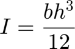
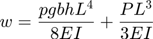

TutorialCantileverBeam: Optimization
Perform optimization on the cantilever beam (TutorialCantileverBeamMatlab.html) using a MATLAB evaluator.

See Also http://cossan.co.uk/wiki/index.php/Cantilever_Beam
Author: Edoardo Patelli, Institute for Risk and Uncertainty, University of Liverpool, UK
Contents
- LICENSE
- Setup
- Definition of the Input: Design Variables
- Definition of the Input: Parameters
- Definition of the Input: Function
- Definition of the Input: Input
- Definition of the Evaluator
- Definition of the Physical Model
- Design of Experiments Analysis
- Results of the Design of Experiments
- Definition of the Objective Function
- Definition of the Constraint
- Definition of the OptimizationProblem
- Optimization: Setup
- Optimization: Sequential Quadratic Programming
- Optimization: Cobyla
- Optimization: Genetic Algorithm
- Compare Optimization results
- Validate Solutions
- Next Tutorials
LICENSE
%{ This file is part of OpenCossan <https://cossan.co.uk>. Copyright (C) 2006-2018 COSSAN WORKING GROUP OpenCossan is free software: you can redistribute it and/or modify it under the terms of the GNU General Public License as published by the Free Software Foundation, either version 3 of the License or, (at your option) any later version. OpenCossan is distributed in the hope that it will be useful, but WITHOUT ANY WARRANTY; without even the implied warranty of MERCHANTABILITY or FITNESS FOR A PARTICULAR PURPOSE. See the GNU General Public License for more details. You should have received a copy of the GNU General Public License along with OpenCossan. If not, see <http://www.gnu.org/licenses/>. %}
Setup
Set the verbosity level to 2 in order to silence evaluator output messages.
OpenCossan.setVerbosityLevel(2);
Definition of the Input: Design Variables
In this tutorial the Random Variables are replaced by two Design Variables. The optimization analysis requires the definition of Design Variables, i.e. the variables that define new configurations.
b = DesignVariable('value',0.12,'lowerBound',0.01,'upperBound',0.50,'Sdescription','Beam Width'); h = DesignVariable('value',0.54,'lowerBound',0.02,'upperBound',1,'Sdescription','Beam Heigth');
Definition of the Input: Parameters
In this example we do not use RandomVariables but only Parameters.
L = Parameter('value',1.8,'Sdescription','Beam Length'); maxDisplacement = Parameter('value',0.001,'Sdescription','Maximum allowed Displacement'); P = Parameter('value',10000,'Sdescription','Load'); rho = Parameter('value',600,'Sdescription','Density'); E = Parameter('value',10e9,'Sdescription','Young''s modulus');
Definition of the Input: Function
Construct the Function object that defines the moment of inertia as

I = Function('Sdescription','Moment of Inertia','Sexpression','<&b&>.*<&h&>.^3/12');
Definition of the Input: Input
Construct the Input object grouping the input objects together.
XinputOptimization=Input('CXmembers',{L b P h rho E I maxDisplacement},... 'CSmembers',{'L' 'b' 'P' 'h' 'rho' 'E' 'I' 'MaxW'}); % The summary show that Xinput contains all the previously created % objects: display(XinputOptimization);
Input Object - Description: * 5 Parameter object(s) ** Names: "L" "P" "rho" "E" "MaxW" * 1 Functions object(s) ** Names: "I" * 2 DesignVariable object(s) ** Names: "b" "h"
Definition of the Evaluator
Construct the Evaluator object by passing an Mio (MATLAB-Input-Output) object. The Mio is used to calculate the displacement
$,
using the previously defined objects.
Sfolder=fileparts(mfilename('fullpath'));% returns the current folder Xmio=Mio('Spath',fullfile(Sfolder,'MatlabModel'),'Sfile','tipDisplacement.m',... 'Cinputnames',{'I' 'b' 'L' 'h' 'rho' 'P'},'Liostructure',true, ... 'Coutputnames',{'w'}); % Create the Evaluator using the Mio Xevaluator=Evaluator('CXmembers',{Xmio},'CSmembers',{'Xmio'});
Definition of the Physical Model
Construct the Model by passing the Input and the Evaluator
Xmodel=Model('Xinput',XinputOptimization,'Xevaluator',Xevaluator);
Design of Experiments Analysis
The DesignOfExperiment analysis can be used to see if a feasible solution is present in the bounds set for the Design Variables.
Define a user DOE object. We evaluate the model at the lower and upper bounds of the design variable plus at the current values. Therefore, for each design variable we have 3 values and a total of 9 model evaluations are required.
The evaluation points are defined by means of the MdoeFactor matrix defined between -1 and 1.
MdoeFactors=[-1 -1;
0 -1;
1 -1;
-1 0;
0 0;
1 0;
-1 1;
0 1;
1 1];
% When the flag Lusecurrentvalues is set to true the current values of the design
% variables is used in corresponcence of the MdoeFactors=0.
Xdoe = DesignOfExperiments('Sdesigntype','UserDefined',...
'Mdoefactors',MdoeFactors,'Lusecurrentvalues',true);
% Show summary of the design of experimemts
display(Xdoe)
% Evaluate the model at the points defined by the DesignOfExperiment
XoutDoe = Xdoe.apply(Xmodel);
=================================================================== DesignOfExperiment Object - Description: =================================================================== * Type of design of experiment : UserDefined * Central composite design : faced * Perturbation parameter : 1 * Current values of the DesignVariable used
Results of the Design of Experiments
h = XoutDoe.getValues('Sname','h'); b = XoutDoe.getValues('Sname','b'); w = XoutDoe.getValues('Sname','w'); Status = cell(9,1); for n = 1:numel(w) if (w(n) < maxDisplacement.value) Status{n} = 'Feasible'; else Status{n} = 'Infeasible'; end end results = table(h,b,w,Status); format shorte; display(results); format short; % There are 3 feasible solutions and this means the the opimization problem % is well defined. Now we have to identify the optimal solution.
results =
9×4 table
h b w Status
__________ __________ __________ ____________
2.0000e-02 1.0000e-02 2.9162e+02 'Infeasible'
2.0000e-02 1.2000e-01 2.4323e+01 'Infeasible'
2.0000e-02 5.0000e-01 5.8552e+00 'Infeasible'
5.4000e-01 1.0000e-02 1.4847e-02 'Infeasible'
5.4000e-01 1.2000e-01 1.2664e-03 'Infeasible'
5.4000e-01 5.0000e-01 3.2808e-04 'Feasible'
1.0000e+00 1.0000e-02 2.3421e-03 'Infeasible'
1.0000e+00 1.2000e-01 2.0367e-04 'Feasible'
1.0000e+00 5.0000e-01 5.5924e-05 'Feasible'
Definition of the Objective Function
The goal of this optimization is to minimaze the weight of the beam. The weight can be easely computed using a matlab script (MIO).
Xobjfun = ObjectiveFunction('Sdescription','objective function', ... 'Sscript','for n=1:length(Tinput),Toutput(n).BeamWeight=Tinput(n).rho*Tinput(n).b*Tinput(n).h*Tinput(n).L;end',... 'CoutputNames',{'BeamWeight'},'Liostructure',true,... 'CinputNames',{'rho' 'b' 'h' 'L'});
Definition of the Constraint
Construct a Constraint defined by the maximum tip displacement of the beam.
XconMaxStress = Constraint('Sdescription','constraint', ... 'Sscript','for n=1:length(Tinput),Toutput(n).Constraint=Tinput(n).w-Tinput(n).MaxW; end',... 'CoutputNames',{'Constraint'},'Liostructure',true,... 'CinputNames',{'w' 'MaxW' },... 'Linequality',true);
Definition of the OptimizationProblem
Construct the OptimizationProblem from the ObjectiveFunction, the Constraint and the Model.
Xop = OptimizationProblem('Sdescription','Optimization problem', ... 'XobjectiveFunction',Xobjfun,'CXconstraint',{XconMaxStress},'Xmodel',Xmodel); % Define the Optimizers Xsqp = SequentialQuadraticProgramming('finitedifferenceperturbation',0.01); Xcobyla = Cobyla(); Xga = GeneticAlgorithms('Smutationfcn','mutationadaptfeasible','NmaxIterations',50, ... 'NPopulationSize',200);
Optimization: Setup
Reset the random number generator in order to always obtain the same results. DO NOT CHANGE THE VALUES OF THE SEED!
OpenCossan.resetRandomNumberGenerator(542727);
Optimization: Sequential Quadratic Programming
Optimize the beam width using Sequential Quadratic Programming
Xoptimum1 = Xop.optimize('Xoptimizer',Xsqp); % Show results of the optimization display(Xoptimum1)
Iter Func-count Fval Feasibility Step Length Norm of First-order
step optimality
0 1 6.998400e+01 2.664e-04 1.000e+00 0.000e+00 5.832e+02
1 3 8.021814e+00 4.710e-03 1.000e+00 2.307e-01 1.028e+04
2 5 1.027388e+01 1.720e-03 1.000e+00 2.085e-01 3.436e+01
3 7 1.607712e+01 5.764e-04 1.000e+00 4.895e-02 3.916e+02
4 9 2.204916e+01 1.519e-04 1.000e+00 5.530e-03 3.466e+01
5 11 2.500979e+01 1.664e-05 1.000e+00 2.741e-03 1.378e+02
6 13 2.542712e+01 1.095e-07 1.000e+00 3.864e-04 1.095e-07
Optimization completed: The relative first-order optimality measure, 1.013561e-10,
is less than options.OptimalityTolerance = 1.000000e-06, and the relative maximum constraint
violation, 1.094645e-07, is less than options.ConstraintTolerance = 1.000000e-03.
Optimization Metric Options
relative first-order optimality = 1.01e-10 OptimalityTolerance = 1e-06 (selected)
relative max(constraint violation) = 1.09e-07 ConstraintTolerance = 1e-03 (selected)
Optimum Object - Description:
|- Design Variables: b h
|-- Values: 2.354e-02
|-- Values: 1.000e+00
|-- Objective function #1 at the optimum: 2.543e+01
|
|-- Inequality constraint (Constraint) values at the optimum: +1.095e-07 Status: Ok
|
|-- Evaluations of the objective function : 39
|-- Evaluations of the constraints : 39
|-- Evaluations of Phisical Model : 39
|-- Number of candidate solutions : 9
|-- Termination criterion : First order optimality conditions were satisfied to the specified tolerance
Total time: 1.0846 seconds
Optimization: Cobyla
Optimize the beam width using Cobyla
Xoptimum2 = Xop.optimize('Xoptimizer',Xcobyla); % Show results of the optimization display(Xoptimum2)
Optimum Object - Description: |- Design Variables: b h |-- Values: 2.300e-02 |-- Values: 9.990e-01 |-- Objective function #1 at the optimum: 2.482e+01 | |-- Inequality constraint (Constraint) values at the optimum: +2.638e-05 Status: Ok |-- Inequality constraint (b_lowerBound) values at the optimum: -1.300e-02 Status: Ok |-- Inequality constraint (b_upperBound) values at the optimum: -4.770e-01 Status: Ok |-- Inequality constraint (h_lowerBound) values at the optimum: -9.790e-01 Status: Ok |-- Inequality constraint (h_upperBound) values at the optimum: -9.759e-04 Status: Ok | |-- Evaluations of the objective function : 23 |-- Evaluations of the constraints : 23 |-- Evaluations of Phisical Model : 23 |-- Number of candidate solutions : 23 |-- Termination criterion : Normal return from cobyla
Optimization: Genetic Algorithm
Optimize the beam width using Genetic Algorithm
Xoptimum3 = Xop.optimize('Xoptimizer',Xga); % Show results of the optimization display(Xoptimum3)
Starting GeneticAlgorithms
Best Max Stall
Generation Func-count f(x) Constraint Generations
1 10416 540 0 0
2 20616 14.1804 0.0008656 0
3 30816 12.9829 0.0009818 0
4 41016 12.8214 0.0009996 0
5 51216 12.8168 0.001 0
Optimization terminated: average change in the fitness value less than options.FunctionTolerance
and constraint violation is less than options.ConstraintTolerance.
Optimum Object - Description:
|- Design Variables: b h
|-- Values: 1.194e-02
|-- Values: 9.937e-01
|-- Objective function #1 at the optimum: 1.282e+01
|
|-- Inequality constraint (Constraint) values at the optimum: +1.000e-03 Status: Ok
|
|-- Evaluations of the objective function : 44411
|-- Evaluations of the constraints : 51233
|-- Evaluations of Phisical Model : 51233
|-- Number of candidate solutions : 268
|-- Termination criterion : Average cumulative change in value of the fitness function over options.StallGenLimit generations less than options.TolFun and constraint violation less than options.TolCon
Total time: 13.1528 seconds
Compare Optimization results
Show results in a table
SQP = [Xoptimum1.NevaluationsObjectiveFunctions;
Xoptimum1.getOptimalObjective;
Xoptimum1.getOptimalDesign';
Xoptimum1.getOptimalConstraint];
COBYLA = [Xoptimum2.NevaluationsObjectiveFunctions;
Xoptimum2.getOptimalObjective;
Xoptimum2.getOptimalDesign';];
cobyla_constraints = Xoptimum2.getOptimalConstraint;
COBYLA(5) = cobyla_constraints(1);
GA = [Xoptimum3.NevaluationsObjectiveFunctions;
Xoptimum3.getOptimalObjective;
Xoptimum3.getOptimalDesign';
Xoptimum3.getOptimalConstraint];
results = table(SQP,COBYLA,GA,'RowNames',{'Number of Evaluations',...
'Objective Function', 'Design Variable b', 'Design Variable h',...
'Constraint'});
display(results);
results =
5×3 table
SQP COBYLA GA
__________ __________ __________
Number of Evaluations 39 23 44411
Objective Function 25.427 24.819 12.817
Design Variable b 0.023544 0.023003 0.011942
Design Variable h 1 0.99902 0.99373
Constraint 1.0946e-07 2.6385e-05 0.00099999
Validate Solutions
Compare the optimal constraints against the reference solutions.
Vsolution = [SQP(5) COBYLA(5) GA(5)]; Vreference=[ 1.01e-07 2.6385e-05 9.9860e-04]; assert(abs(max(Vsolution-Vreference))<1e-4, 'Tutorial:TutorialCantileverBeamOptimization',... 'Solutions do not match reference values');
Next Tutorials
- Cantilever Beam Reliability Analysis: TutorialCantileverBeamMatlabReliabilityAnalysis.html
- Cantilever Beam Reliability Based Optimization: TutorialCantileverBeamMatlabRBO.html